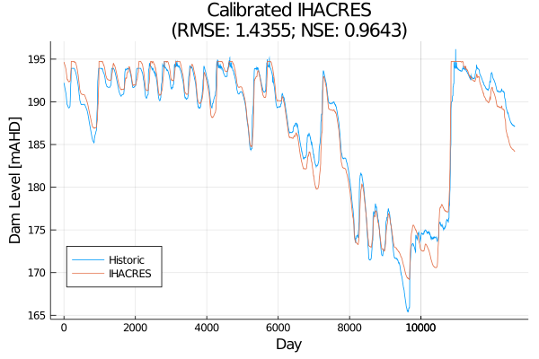
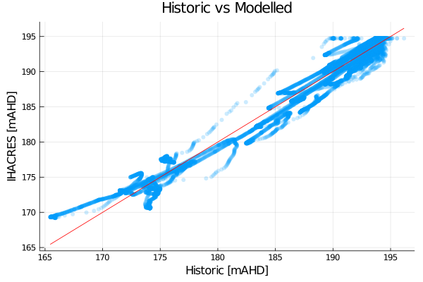

Example calibration
# Import common packages and functions
# This is shown under Calibration Setup
include("_obj_func_definition.jl")
"""Example calibration function.
Illustrate model calibration using the BlackBoxOptim package.
"""
function calibrate(sn, v_id, climate, calib_data)
ins = inlets(sn, v_id)
# Recurse through and calibrate all nodes upstream
if !isempty(ins)
for nid in ins
calibrate(sn, nid, climate, calib_data)
end
end
this_node = get_node(sn, v_id)
# Create new optimization function (see definition inside Calibration Setup)
opt_func = x -> obj_func(x, climate, sn, v_id, calib_data)
# Get node parameters (default values and bounds)
x0, param_bounds = param_info(this_node; with_level=false)
opt = bbsetup(opt_func; SearchRange=param_bounds,
Method=:adaptive_de_rand_1_bin_radiuslimited,
MaxTime=300.0, # time in seconds to spend
TraceInterval=30.0,
PopulationSize=100,
# Workers=workers()
)
res = bboptimize(opt)
bs = best_candidate(res)
@info "Calibrated $(v_id) ($(this_node.node_id)), with score: $(best_fitness(res))"
@info "Best Params:" collect(bs)
# Update node with calibrated parameters
update_params!(this_node, bs...)
return res, opt
end
v_id, node = get_gauge(sn, "406219")
@info "Starting calibration..."
res, opt = calibrate(sn, v_id, climate, hist_data)
best_params = best_candidate(res)
@info best_fitness(res)
@info best_params
update_params!(node, best_params...)
Streamfall.run_node!(sn, v_id, climate)
h_data = hist_data["406219"]
n_data = node.outflow
@info "Outflow NNSE:" Streamfall.NNSE(h_data, n_data)
@info "Outflow RMSE:" Streamfall.RMSE(h_data, n_data)
reset!(node)
dam_id, dam_node = get_gauge(sn, "406000")
timesteps = sim_length(climate)
for ts in (1:timesteps)
run_node!(sn, dam_id, climate, ts; water_order=hist_dam_releases)
end
h_data = hist_dam_levels[:, "Dam Level [mAHD]"]
n_data = dam_node.level
rmse = Streamfall.RMSE(h_data, n_data)
nse = Streamfall.NSE(h_data, n_data)
# Results of model run
plot(h_data,
legend=:bottomleft,
title="Calibrated IHACRES\n(RMSE: $(rmse); NSE: $(nse))",
label="Historic", xlabel="Day", ylabel="Dam Level [mAHD]")
plot!(n_data, label="IHACRES")
savefig("calibrated_example.png")
# 1:1 Plot
scatter(h_data, n_data, legend=false,
markerstrokewidth=0, markerstrokealpha=0, alpha=0.2)
plot!(h_data, h_data, color=:red, markersize=.1, markerstrokewidth=0,
xlabel="Historic [mAHD]", ylabel="IHACRES [mAHD]", title="Historic vs Modelled")
savefig("calibration_1to1.png")
# NNSE: 0.9643; RMSE: 1.43553
# d: 84.28015146853407
# d2: 2.4224106535469145
# e: 0.8129590022893607
# f: 2.579276454391652
# a: 5.923379062122229
# b: 0.0989925603647026
# storage_coef: 1.8613364808233752 # gw storage factor
# alpha: 0.7279050097363565
